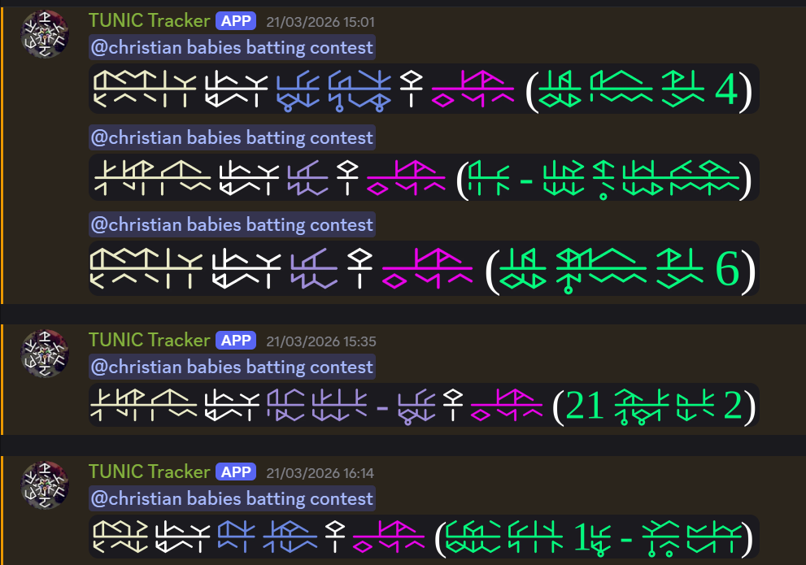
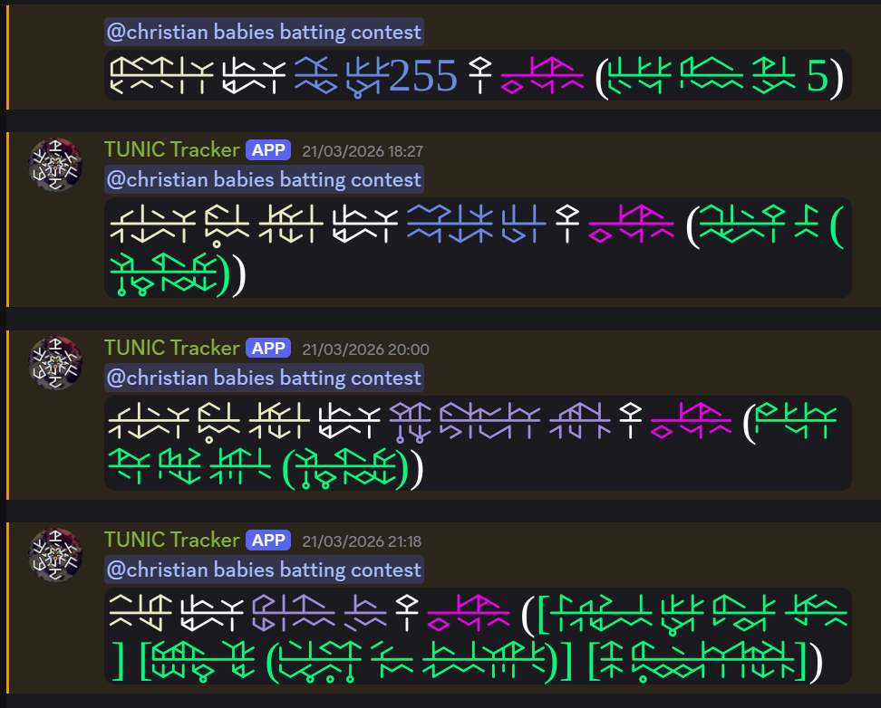

there's not really any spoilers for the game itself but deciphering the language itself is very fulfilling so you should absolutely try to do so before giving up and looking it up
you can do it, mabel believes in you
it's finally here! mysterious glyphs and sigils
the tunic archipelago tracker is a discord bot that logs into a slot and sends a discord message that pings you whenever you get a (non-filler) item (from someone other than yourself)


basically i already made a tunic text renderer in 2025 and i thought it would be funny to use it to make a tracker where everything is incomprehensible
there are other tunic renderers online [1] [2] but this one can convert any english text input thanks to a library meant for text-to-speech that includes "a pre-trained grapheme-to-phoneme model for guessing word pronunciations"
last updated: 2026/??/??